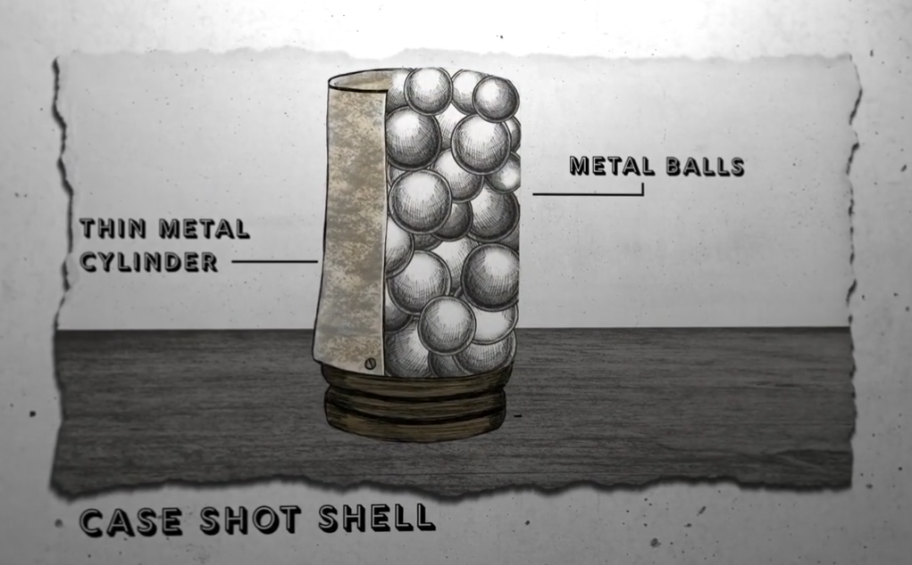
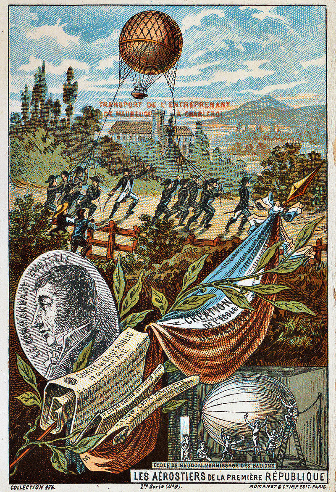
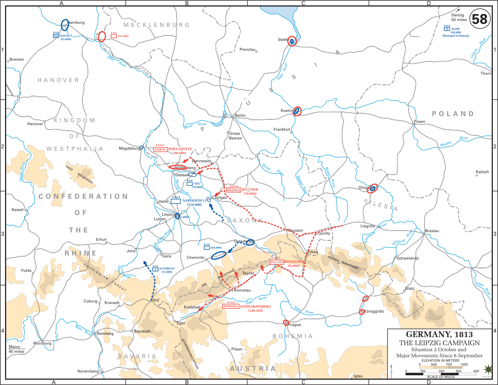
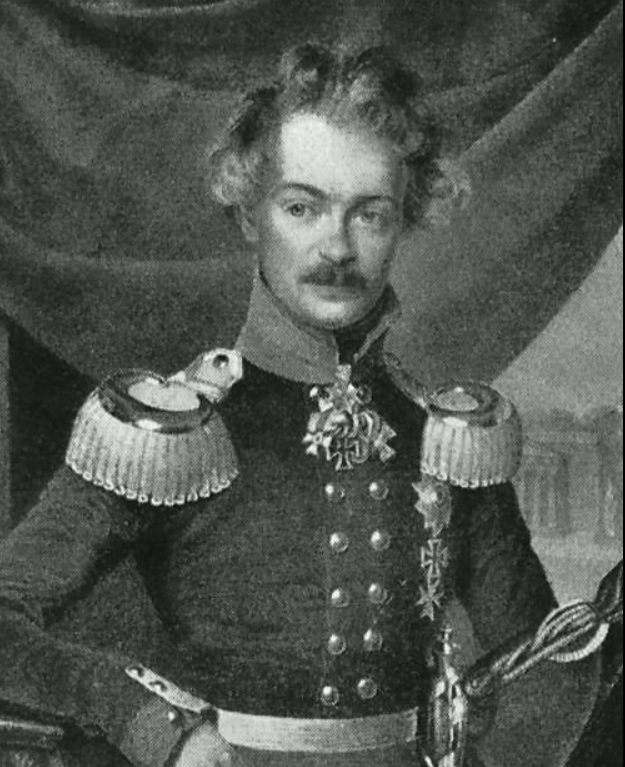
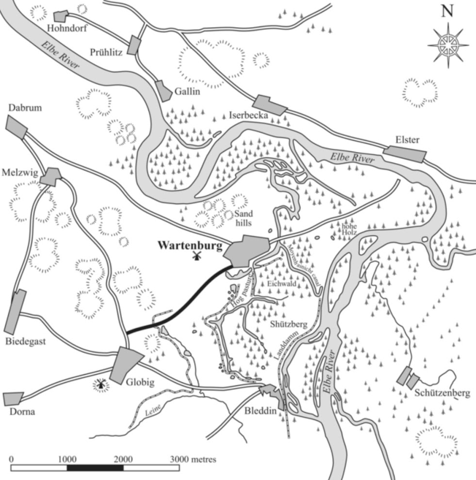

라이프치히로 가는 길 (12) - 바르텐부르크 전투 (상)
게시: 2025-01-13T06:30:22+09:00
지하 미로를 헤쳐나가는 형태의 게임에 대해 이런 말이 있습니다. "가는 곳마다 함정과 괴물이 쏟아져 나온다면 제대로 된 방향으로 가고 있는 것이다." 비슷하게 전투에 대해서는 이런 말도 있습니다. "아군의 진격에 전혀 막힘이 없다면 함정으로 걸어들어가고 있는 것이다." 애초에 도강 작전에서 가장 어려운 부분은 최초에 부교를 놓는 과정입니다. 공병들이 다리를 놓고 있는데 강 건너편에서 적군이 대포를 가져다 놓고 포도탄을 쏘아대고 있다면 모든 것이 불가능합니다. 그런데 프로이센군이 옛 부교의 교두보를 재점령하고 기초 공사를 하는데도, 바로 인근인 바르텐부르크의 그랑다르메에서는 아무런 방해 조치를 취하지 않았습니다. 이건 뭔가 매우 수상한 일이기는 했습니다.

(산탄(caseshot), 캐니스터탄(canistershot) 또는 포도탄(grapeshot)이라고 불리는 이런 종류의 포탄은 밀집 보병 대오에 대해 괴멸적인 피해를 안겨줄 수 있었습니다.)
10월 2일 저녁 6시 무렵에 일단의 뷔르템베르크 유격병들이 나타나 교두보의 프로이센군을 공격하기는 했습니다만, 이들은 프로이센군의 거센 반격, 그리고 특히 강 건너편에 방열된 프로이센 포병들의 포격을 받자 맥없이 물러나 버렸습니다. 어떻게 생각하면 그렇게 부교 건설을 방해하려고 해봐야, 말굽 모양으로 굽이치는 강 건너편 강안에서 십자포화를 퍼부어댈 프로이센 포병들의 밥이 될 뿐이니 방해 자체를 포기한 것이라고 프로이센군이 판단할 만도 했습니다. 가장 아쉬운 부분은 9월 중순부터 이미 한 차례 부교를 놓고 건너와 바르텐부르크까지 잠깐 점령하고 있었던 베르나도트 휘하 뷜로의 프로이센군과의 협동 작전이었습니다. 뷜로의 지휘하에 있던 보슈텔의 제5여단 소속 유격병들은 블뤼허의 슐레지엔 방면군이 엘스터에 도착하여 부교 건설을 시작할 때도 현장에 있었으나, 정작 10월 1일부터 본격적인 공사가 시작되자 이들은 현장을 인계한 뒤 물러나 버렸습니다. 이들 중 아무도 강 건너편의 지형이 어떤지에 대해서 구두로든 보고서로든 알려주지 않았습니다. 그런 것을 보면, 확실히 뷜로와 블뤼허 사이에는 개인적인 알력이 여전히 존재했던 것 같습니다.

(항공기가 전쟁에 미치는 영향은 매우 큽니다만, 가장 먼저 사용된 용도는 바로 정찰이었습니다. 비행기는 고사하고 당시 휴대하기 편리한 기구만 있었어도 많은 장군들이 정말 좋아했을 것입니다. 이미 프랑스군에서는 혁명 초기 별도의 전문 기구 부대를 운용할 정도로 신기술에 적극적이었으나, 당시 기술로는 워낙 이동이 번잡했고, 결정적으로 나폴레옹은 신기술을 별로 좋아하는 지휘관이 아니었습니다. https://nasica1.tistory.com/134 참조) 이렇게 낯선 곳에서 새롭게 도강 작전을 펼쳐야 했던 블뤼허는 강 건너 지형이 어떤지 파악하려 나름 애를 썼습니다만, 그게 의외로 쉽지 않았습니다. 비록 자신들이 자리를 잡은 엘베강 우안이 좌안보다 약간 더 높은 지대이긴 했지만 그 일대 전체가 비교적 평탄한 지대라서 어차피 고도 차이가 크지는 않았고, 또 강 건너 교두보 주변의 공터 너머로는 관목과 풀밭이 높고도 뺵빽하게 자라 있어서 지형 지물을 파악하기가 쉽지 않았습니다. 게다가 교두보로부터 고작 2km 정도 거리에 있던 바르텐부르크만 해도 꽤 높이 자란 숲으로 차단되어 있었고, 엘베강 건너편에서 볼 때도 엘베강변과 그 소도시 사이에는 모래언덕이 자리잡고 있어 시선을 차단하고 있었으므로 블뤼허는 당장 눈 앞의 바르텐부르크에 어느 정도의 적군이 도사리고 있는지 알 방법이 전혀 없었습니다. 단지, 비텐베르크를 포위하고 있던 뷜로가 약 6천의 그랑다르메 병력이 비텐베르크 남쪽에서 바르텐부르크 방면으로 이동하는 것이 목격되었다는 소식을 알려주었고, 따라서 엘베강을 건너자마자 한판 전투가 불가피하다고는 판단할 수 있었습니다. 블뤼허가 믿는 자신들의 가장 큰 이점은 기습이었습니다. 이미 엘스터에 며칠에 걸쳐 부교를 놓고 있으면서 뭔 기습이냐 싶겠지만, 이미 한 번 부교를 놓았던 곳에 다시 부교를 놓는 것이다보니 그랑다르메측의 경계심은 다소 떨어질 수 있었습니다. 그리고 여기서 말하는 기습이란 바로 도강 규모에 대한 것이었습니다. 블뤼허는 슐레지엔 방면군 전체가 엘스터까지 올라와 있다는 것을 나폴레옹이나 네가 전혀 모르고 있을 것이라고 판단했고, 그게 사실이었습니다. 나폴레옹은 슐레지엔 방면군이 여전히 바우첸 일대에서 막도날의 보버 방면군과 대치하고 있다고 생각했지만, 실은 막도날과 대치하고 있었던 것은 슐레지엔 방면군을 대체한 폴란드 방면군의 일부 군단이었습니다. 이렇게 정보가 어두웠던 것은 나폴레옹이 엘베강 우안 지역을 모두 포기하고 엘베강을 저지선으로 택한 것에서 비롯된 것이었는데, 어차피 사방에 깔린 코삭 기병대를 뚫고 정찰을 수행하기에는 그랑다르메의 기병대가 너무 부족했으므로 어쩔 수 없는 일이긴 했습니다. 결과적으로 바르텐부르크를 지키고 있던 그랑다르메는 자신들이 슐레지엔 방면군 전체를 상대하게 된다는 것을 전혀 모르고 있었습니다. 이런 점을 십분 활용하고자, 블뤼허는 일부러 랑쥬롱의 러시아군을 젖혀두고 요크의 프로이센군이 공격의 선봉을 서도록 했습니다. 이는 물론 블뤼허가 프랑스 태생의 랑쥬롱을 혐오하여 그에게 공을 세울 기회를 주지 않으려 했던 것도 있었겠지만, 표면적인 이유는 뷜로의 프로이센군이 장악한 이 일대에서 갑자기 러시아군이 나타날 경우 적군이 매우 이상하게 생각할 수도 있다고 생각했기 때문이었습니다.

(블뤼허의 슐레지엔 방면군이 바우첸 일대에서 엘스터로 이동한 행군 경로입니다. 이런 대군이 평탄한 지역에서 행군을 하는데 나폴레옹이 전혀 몰랐다는 것은 사실 문제가 심각한 것이었습니다. 저 남쪽 얼츠비어거 산맥에서 우르르 올라오는 여러 개의 화살표는 보헤미아 방면군의 진격로입니다. 이렇게 지도를 놓고 보면 왜 드레스덴에 있던 나폴레옹이 결국 라이프치히에서 최후를 맞이했는지 알 수 있습니다.) 마침내 10월 3일 새벽, 2개의 부교가 모두 완성되자 요크 휘하 부대 중 메클렌부르크(Mecklenburg) 여단이 젊은 카알 대공(Karl Friedrich August Herzog zu Mecklenburg)의 지휘하에 우르르 강을 건너 진격을 시작했습니다. 처음에 별 어려움 없이 부교를 건너 진격을 시작한 제2여단은 교두보 너머의 공터를 지나자 곧 당황할 수 밖에 없었습니다. 사방이 온갖 지류와 연못, 늪, 운하 등으로 뒤죽박죽 되어 있는데다 의외로 관목과 풀이 너무 뺵빽히 자리잡고 있어 대포는 고사하고 보병조차 전진이 어려웠기 때문이었습니다. 그나마 그런 운하와 지류의 상당 부분에서 물이 빠진 상태라는 점이 다행이었습니다. 그러는 와중에 길목을 지키고 있던 작은 규모의 뷔르템베르크 초병들을 밀어내느라 사격을 해야 했는데, 이 총성은 바르텐베르크의 그랑다르메 부대들에게 적군이 부교를 넘어 쳐들어왔다는 것을 경고해주기에 충분했습니다.

(젊은 카알 대공의 초상화인데, 이 석판화가 몇 살 때 그려진 것인지는 모르겠으나 1813년 당시 카알 대공은 불과 28세였고 계급은 육군 중장이었습니다. 그는 19세에 대위, 21세에 소령을 달긴 했지만, 정말 군부대를 지휘해본 것은 바로 몇 주 전 카츠바흐(Katzbach) 전투 때가 사실상 처음이었습니다. 그런 것치고는 이 바르텐부르크 전투에서 카알 대공은 무척 잘 싸운 편이었습니다. 그는 평생 결혼하지 않았고, 51세의 비교적 젊은 나이에 병사했습니다.) 온갖 고생을 해가며 간신히 숲을 뚫고 바르텐부르크 인근 1km 지점까지 접근한 카알 대공은 대체 왜 그랑다르메가 그동안 부교 건설을 방해하지 않았는지 궁금증이 풀리면서 패배를 직감했습니다. 바르텐부르크 일대가 그렇게 운하와 지류, 시냇물로 뒤덮혀 있다는 소리는 우기에는 홍수가 나기 딱 좋다는 뜻이었고, 실제로 그랬습니다. 그런 홍수로부터 마을을 보호하기 위해 바르텐부르크는 북동쪽에서 남서쪽으로, 그러니까 프로이센군이 접근하는 방향을 주욱 가로질러 꽤 높은 제방으로 보호되어 있었습니다. 이 제방에는 란담(Landdamm, 실은 영어의 land dam이라는 뜻이고, 원래는 고유명사는 아닙니다)이라는 고유명사까지 붙어있을 정도로 크고 든든한 것이었는데 방어군이 그 뒤에 숨어서 사격을 퍼붓기에 딱 좋은 구조물이었고, 그 뒤에는 대포 포좌가, 그 앞에는 듬성듬성 굵은 말뚝을 엮어 만든 장애물이 주욱 둘러쳐져 있었습니다. 란담 제방을 향해 돌격하는 보병들은 그 장애물을 넘으려 애쓰는 동안 제방 위에서 쏟아지는 머스켓 총탄과 포도탄 세례를 받고 줄줄이 시체가 될 것이 뻔했습니다.

(카알 대공이 강 건너에서 발견할 지형은 이런 식이었습니다. Landdamm이라는 이름의 긴 제방이 여기저기에 놓여진 것이 보입니다. 특히 프로이센군에게 큰 피해를 준 것은 바르텐부르크 바로 남동쪽 경계를 따라 길게 놓여진 제방이었습니다. 또 바르텐부르크에 인접한 북쪽 모래언덕도 프로이센군에게 매우 곤란한 존재가 되었습니다.) 뿐만 아니었습니다. 란담에 가로막혀 아직 시내 안쪽은 관측조차 할 수 없었지만, 프로이센군의 접근을 눈치챈 바르텐부르크 안에서는 각종 명령하는 고함 소리와 함께 그에 호응하는 병사들의 함성이 들렸는데, 그 규모가 최소 수천, 어쩌면 만 명이 넘는 수준이었습니다. 예상과는 달리 최소 사단급 병력이 바르텐부르크 안에 있는 것이 틀림없었습니다. 이런 상황 속에서 고작 여단 병력을 이끌고 온 카알 대공의 판단은 어떤 것이었을까요? Source : The Life of Napoleon Bonaparte, by William Milligan Sloane Napoleon and the Struggle for Germany, by Leggiere, Michael V With Napoleon's Guns by Colonel Jean-Nicolas-Auguste Noël https://www.britannica.com/event/Napoleonic-Wars/Dispositions-for-the-autumn-campaign http://www.historyofwar.org/articles/campaign_leipzig.html https://en.wikipedia.org/wiki/Battle_of_Wartenburg https://en.wikipedia.org/wiki/Duke_Charles_of_Mecklenburg